AVARON
Training software that connects athlete sessions, anatomical body views and coaching workflows, supported by shared APIs and database infrastructure. The project grew out of earlier motion-sensor experiments.
Visit AVARON Sports ↗The work between practices
AVARON begins with a practical visibility problem: much of an athlete's training happens outside the formal practice a coach can observe. A run, a lift, a drill session and a period of recovery can all matter, yet a list of completed workouts does not tell an athlete what to do next or help a coach interpret the whole week. The product brings training history, body-state estimates, athlete reports and roster context into one workflow. Its central interface is a body map because the intended decision concerns the athlete's body, rather than another total on a dashboard.
The project has grown beyond its lacrosse-sensor origins into an all-sport platform. The most revealing portfolio story is that evolution across layers: physical sensing and desktop collection, mobile training tools, anatomical interfaces, backend contracts and the infrastructure needed to change them safely. AVARON is the product name; SPAITR LLC and SPAITR remain the legal and technical identities. It is organization work with multiple contributors. Joey's history supports specific contributions across those layers, rather than a claim that every feature or underlying library was created by one person.
An athlete's path from a question to a session
An athlete can enter through a coach assignment, build a workout or ask the session-generation workflow for help. Existing sessions and imported activity supply history; a feeling report adds another kind of evidence. The important connection is between those inputs and a concrete action: inspect the body, understand a limiting area, choose or adjust a session, then record what actually happened. History and completion surfaces make the result available to the next decision instead of treating a workout as an isolated interaction.
The October source makes the distinction between assumed and reported information unusually explicit. Today can show an assumed neutral feeling without silently submitting a check-in. An earlier adverse report can remain relevant while fading, and that carried state is labeled separately. This is a product detail with a data-contract consequence: a convenient default in the interface must not become a fabricated user event. The historical tour's check-in screen and public activity screenshots illustrate stages of the journey; the newer Today behavior is established by October code and canonical notes rather than by pretending the older pictures show it.
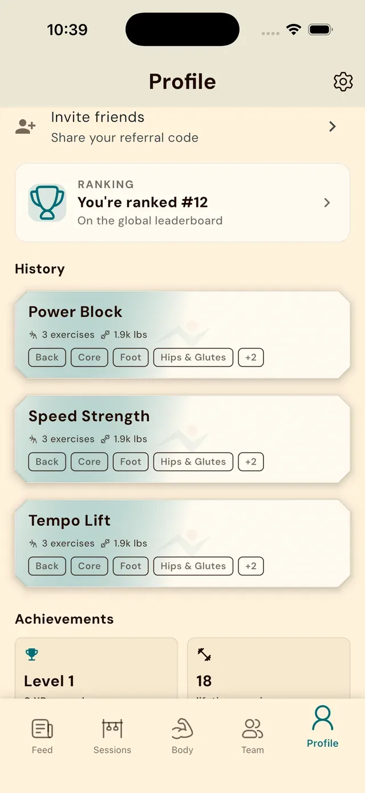
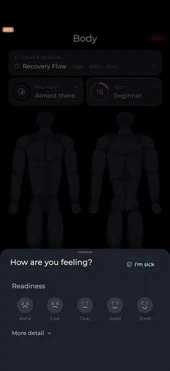
The body map is a reusable interface, not a single picture
The source exposes a reusable body component with front and back views, several sizes and different meanings for the same geometry. Fatigue, activation, highlighting, sport emphasis, strength and selection modes support different tasks without inventing a new body drawing for each screen. The same system appears in workout composition and coach views. Geometry, state-to-color decisions, hit testing, semantics and motion are separate concerns. That separation matters when the same muscles must be tappable on a detailed page yet readable as a compact team thumbnail.
Zero load and missing training history are different states. A muscle that has recovered after training should not look identical to one with no recent history. The body model carries that distinction explicitly instead of inferring it from a small score. The anatomy examples use sample values to show how those states appear.
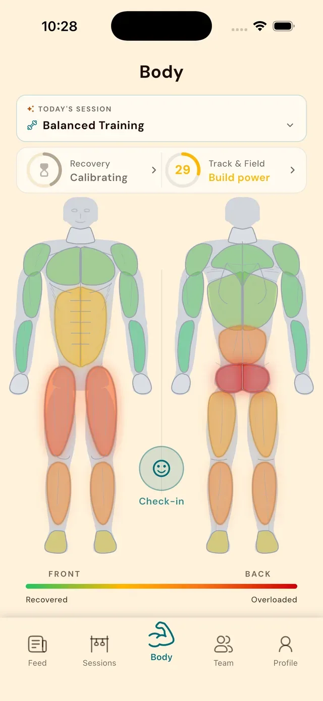
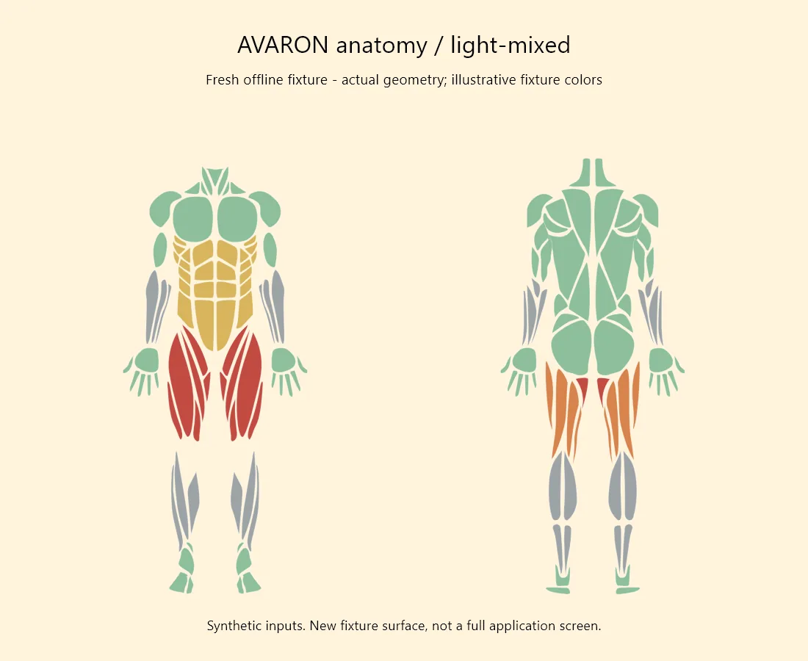
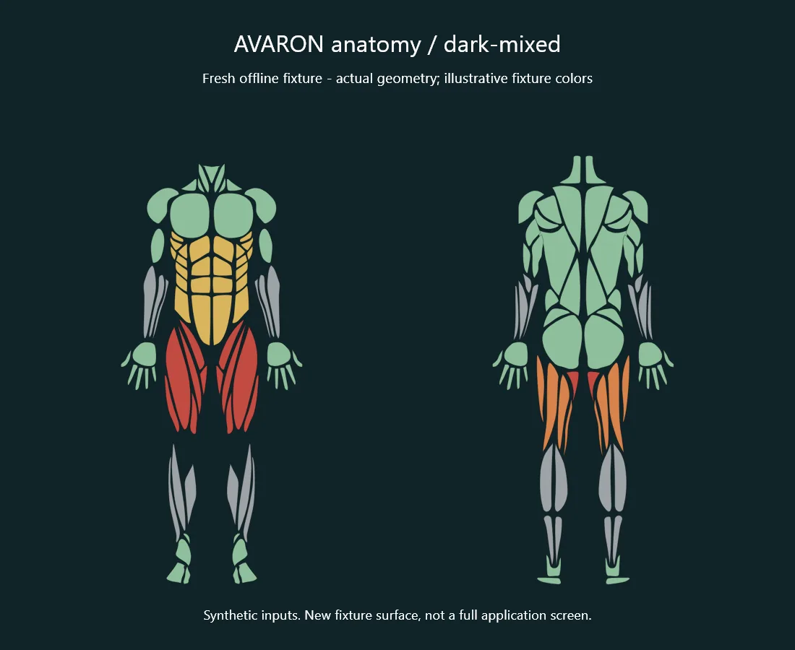
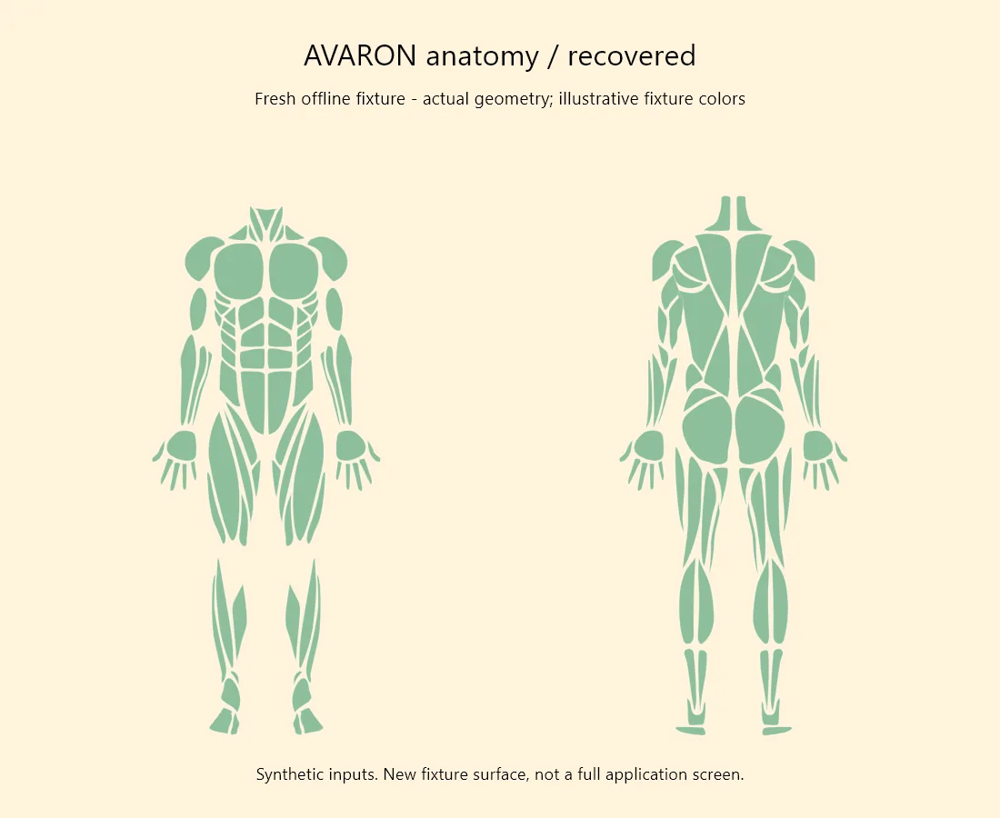
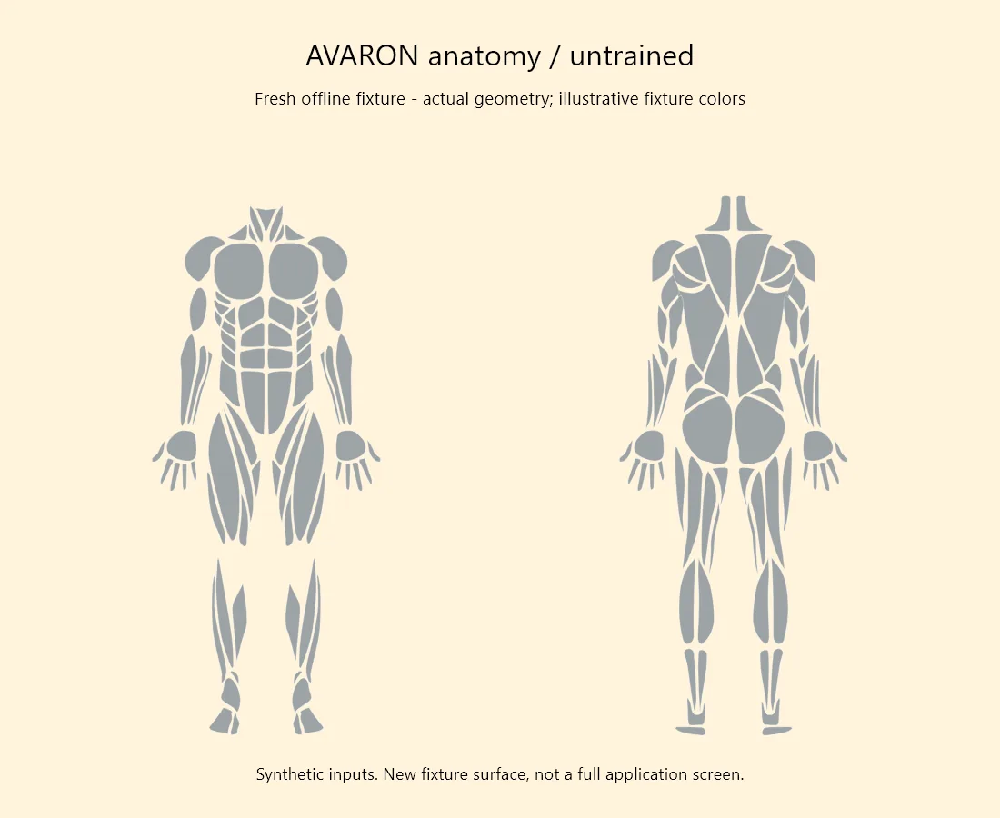
From a drawn muscle to a meaningful structure
Opening a zone goes beyond enlarging the overview. The anatomy explorer connects visible structures to tissue identity and exercise-load information. The engineering difficulty is that a shared-looking label does not imply a shared database key. The documented resolver distinguishes tissue type and key, with different lookup rules for joints, tendons, ligaments, nerves and fascia. A shape can resolve to a real row yet still have no useful exercise-load relationship. The repository explicitly treats those as separate questions instead of calling a successful lookup complete coverage.
The drawing also has a provenance boundary. The anatomical-piece implementation credits MIT-licensed react-native-body-highlighter artwork, while AVARON adapts paths, grouping, rendering, interaction and motion around it. That is a stronger and more accurate story than claiming the whole illustration was drawn from scratch. October changes include a fixed anatomy canvas and seamless zone dives. Reduced-motion checks and a nonvisual body summary accompany the visual behavior, so a complex animated model still has an understandable state for people who do not use its motion or cannot see its colors.
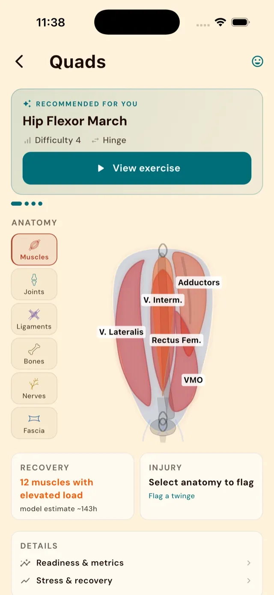
Make the calculation and its explanation agree
AVARON's documented architecture separates deterministic training decisions from language and content generation. The source is particularly interesting where explanations must preserve mathematical meaning. The readiness payload distinguishes an absent or unusable input from a present input with no deficit. Current deficit presentation normalizes marginal contributions so displayed integer rows reconcile with the shown score, including an explicit positive feeling contribution when supplied. Workload information with a zero cap must not accidentally turn into a large recovery penalty merely because an older score field is still present.
Overview and detail screens need to agree. Centralizing the calculation prevents scores from changing simply because data arrived in a different order. Missing information stays unknown, a measured zero remains zero, and an unknown row does not dilute a weighted fitness result.
A workout is a lifecycle, not a form submission
Session generation accepts constraints such as available time, equipment, training focus and recovery context, but using the result introduces a different set of problems. A live runner must know whether an athlete is preparing, actively performing a set, resting, reviewing or finished. The source models those phases explicitly, with stable set identity and structured rest/check-in state rather than relying only on a collection of loosely related boolean flags. The interface can then attach logging, timers, edits and recovery behavior to a meaningful phase.
Persistence belongs in that story. The broader mobile architecture includes cached repositories, local storage and pending operations, while the runner documentation describes crash-recovery and offline work. A completion can be tracked, imported, manual or checklist-based; those labels should survive into the result rather than being smoothed into an identical-looking success. Reviewed demo discussion from June recorded save/completion and navigation failures, making the less glamorous work visible. A timer that looks good is only part of the tool: the athlete must be able to exit, recover and trust that the work was actually retained.
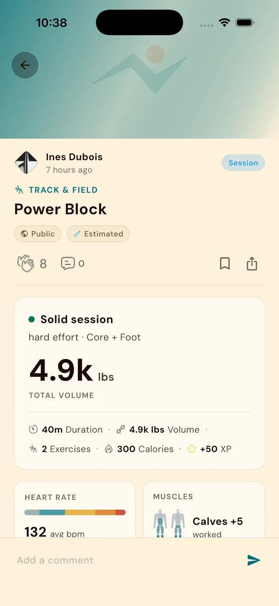
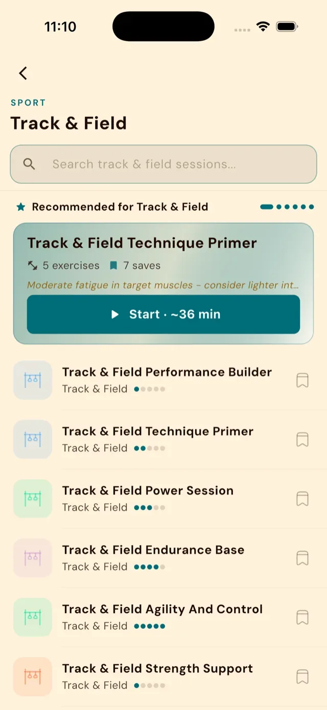
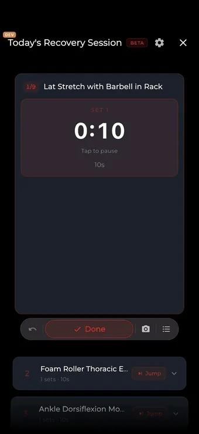
Help a coach find the exception that needs attention
A coach-facing screen has a different job from an athlete's personal dashboard. The repository's player-attention design leads with exceptions such as overdue work, quiet periods, logged restrictions or unusual load, then exposes the measurements supporting them. Its quiet state is meaningful only when the underlying checks actually ran. Loading and failed sources remain separate from an empty list of concerns; a network error cannot become an all-clear message. This principle is visible in both documentation and the newer workspace's treatment of partial readiness results.
The team product also separates work that is easy to conflate. A coach library contains media resources, library assignments track those resources, and workout assignments have their own completion and review semantics. Viewing a video is not the same event as completing a workout. Roles add another dimension: showing a button, authorizing an operation in the database and wiring the correct exact-team context must agree. The public coach screenshots show dashboard, roster and athlete views from the historical marketing set. October workspace recovery and review flows carry their own pending-validation notes, so a source merge is not presented as proof that every newer path was released.
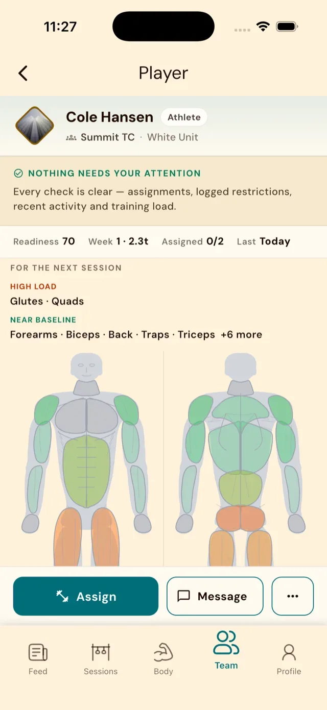
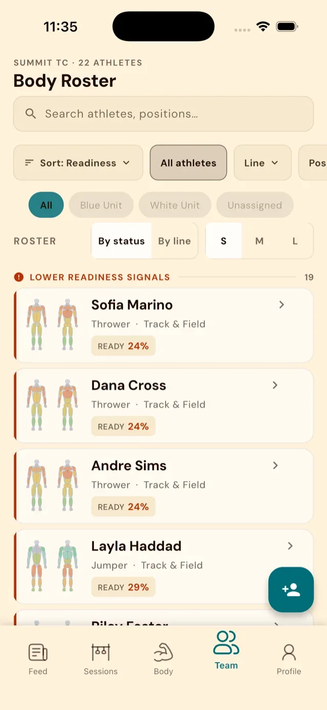
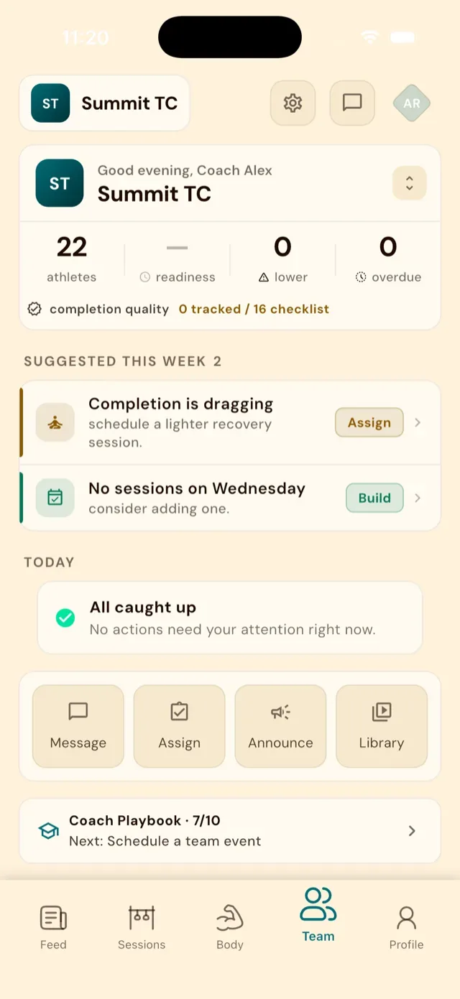
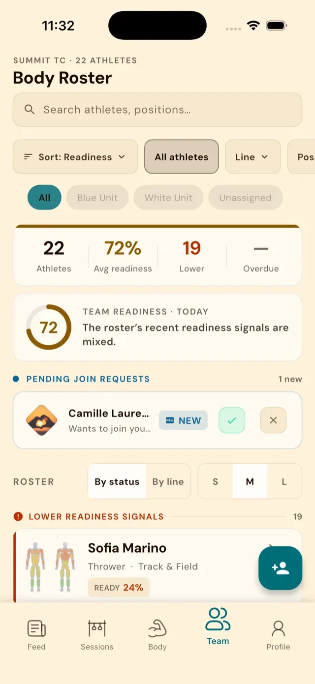
Visible work, with boundaries around who can see it
Feed, history, sharing and team activity make the platform more than a private calculation tool. They give training a social context and let work be acknowledged. The codebase includes different audiences and provenance labels because a public activity card and a coach's body view have different privacy expectations. The product notes explicitly separate teammate-visible activity from personal readiness, soreness and anatomical detail. Treating everything associated with a team as equally shareable would undermine that distinction.
This creates useful engineering constraints for the portfolio story. Account identity and selected team must travel through cached state, asynchronous work and navigation. A response started for one account cannot simply publish into whichever account is current when it finishes. The October runner/body notes call out owner checks around import publication, while coach workspace notes require exact-team roles rather than treating selection as authorization. The public feed screenshots illustrate the social surface; the more distinctive contribution is the work that keeps a convenient shared interface from becoming a confused data boundary.
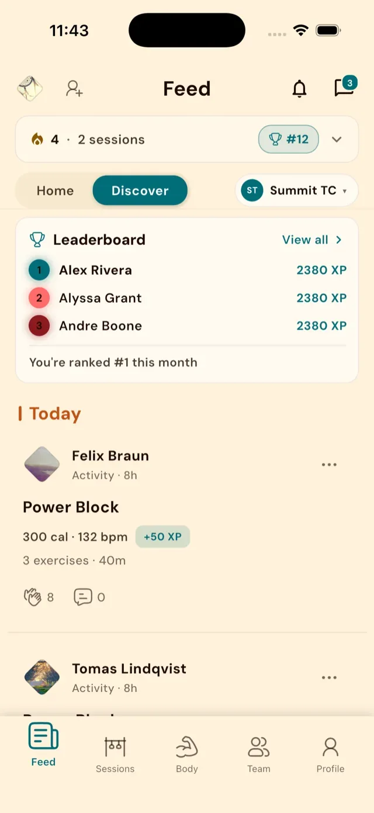
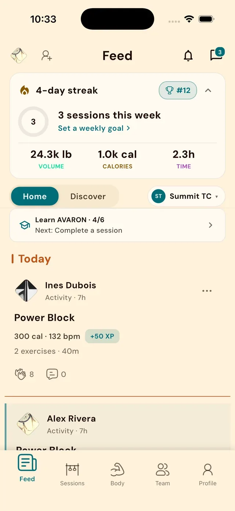
Carry identity through the API and into the database
The backend is a NestJS/TypeScript service around a PostgreSQL data model, with domain modules for sessions, exercises, teams, wearables, moderation and other concerns. Authentication is a separate path: the Flutter client signs in through self-hosted GoTrue, and the API verifies already-issued tokens. That distinction determines where a control belongs. A login policy cannot be enforced by a NestJS request guard if the password grant never passes through that service.
For user data, withRls opens a transaction, applies the authenticated role and JWT claims locally, runs the operation and resets the context before returning the connection. Claims are parameter-bound rather than concatenated into SQL, and request-path timeouts bound expensive or stalled work. Administrative access uses a separate guarded path. Route flags add another boundary during endpoint migration: the server can refuse a disabled route, rather than relying on a well-behaved client to avoid it. Joel-authored May history establishes auth/withRls/admin-guard work; June commits add admin step-up and connection resilience. Those are concrete contributions to describe alongside the visible mobile work.
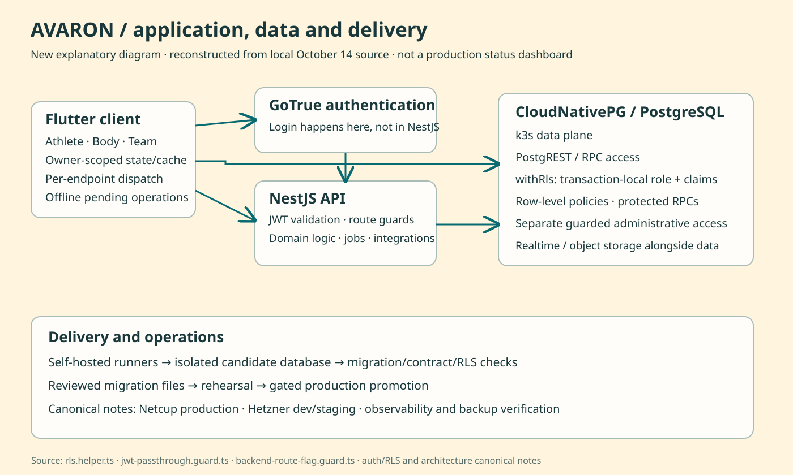
Make database changes reproducible before they reach users
Current canonical notes describe CloudNativePG on k3s as the operational database target, with Netcup hosting production and Hetzner serving development/nonproduction and staging. Older API documentation still contains Supabase migration-era and earlier-host language. Reading only that README would produce the wrong architecture story. The repository now includes the database, gateways, authentication, realtime, observability and release tooling needed to operate a platform rather than just a standalone API.
A substantial part of the engineering is how changes are checked. Candidate databases isolate suites from mutable shared development state; migration rehearsals and contract checks inspect compatibility before a gated production promotion. October contribution history includes reclaiming expired candidate leases and reducing rehearsal overhead with batching, connection reuse and read-ahead. The performance note distinguishes measured baselines, a requested target and later work still needing calibration. The defensible portfolio claim is the implementation and its design reasoning, not an invented speedup. The same care applies to operations: definitions for alerts and backups are useful artifacts, while restore and live-health claims require separate receipts.
The electronics bench is part of the same investigation
The physical thread starts with earlier lacrosse sensing and continues through Arduino experiments and a Python/Bluetooth collection dashboard. Those projects explore acquiring motion, keeping sessions and turning samples into analysis. The revived AVARON R2 board is a later engineering prototype: a Nordic nRF52840 module, six-axis IMU, external flash and battery/USB power circuitry, with C/Zephyr recorder firmware. It provides a natural connection between the software laptop and an electronics bench in the workshop portfolio, without implying the current mobile platform depends on a finished sensor.
The R2 prototype brings together power management, charging protection, sensor connections and recoverable recording. Designing the board meant working through pin mappings, protection components and how recordings survive interruptions. Assembly, powered testing and connection to the app are still next steps.


An evolving platform, with inspectable contributions
The project grew from desktop data collection into mobile training tools, sensor hardware and coaching workflows. Work on anatomy and coach views also brought new demands on the API, account boundaries and release infrastructure.
Across the project, the strongest recurring engineering lesson is that unknown must remain distinguishable from success. It appears in missing training evidence, coach attention, partial roster results, account-safe asynchronous state, route flags and release checks. Another is that one model needs one authoritative calculation, even when many interfaces reuse it. These are learning topics supported by the code and reviewed records, rather than invented personal reflections. Joey's portfolio should connect those concrete choices to his contributions, show the working surfaces and artifacts, and retain the experimentation that explains how the platform developed.